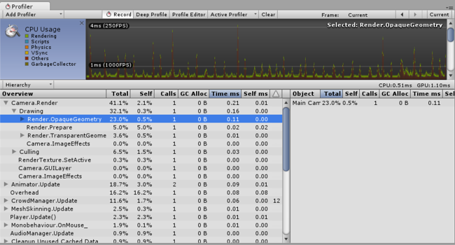
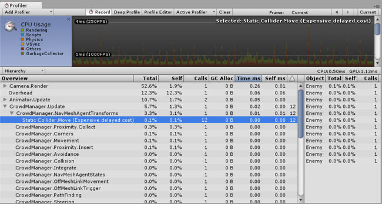

Thank you for helping us improve the quality of Unity Documentation. Although we cannot accept all submissions, we do read each suggested change from our users and will make updates where applicable.
For some reason your suggested change could not be submitted. Please try again in a few minutes. And thank you for taking the time to help us improve the quality of Unity Documentation.
The CPU Usage area displays where time is spent in your game. When it is selected, the lower pane displays hierarchical time data for the selected frame.
Hierarchy mode: Displays hierarchical time data.
Group Hierarchy mode: Groups time data into logical groups (Rendering, Physics, Scripts etc.). Because children of any group can be in different group (e.g. some script might call rendering functions), the percentages of group times often add up to more than 100%. (This is not a bug.)
The way the CPU chart is stacked can be reordered by simply dragging chart labels up & down.
Selecting Individual Items
When an item is selected in the lower pane, its contribution to the CPU chart is highlighted (and the rest are dimmed). Clicking on an item again de-selects it.

Render.OpaqueGeometry is selected and its contribution is highlighted in the chart.
In the hierarchical time data the self time refers to the amount of time spent in a particular function not including the time spent calling sub-functions. In the screenshot above, for example 41.1% of time is spent in the Camera.Render function. This function does a lot of work and calls the various drawing and culling functions. Excluding all these functions only 2.1% of time is spent actually in the Camera.Render function. The Time ms and Self ms columns show the same information, but presented in milliseconds. So, Camera.Render takes 0.01ms, but including all the functions it calls, 0.21ms are consumed. The GC Alloc column shows how much memory has been allocated in the current frame, which will be collected later by the garbage collector. By designing your code to keep this value at zero, you can avoid the Garbage Collector from causing hiccups in your framerate.
The Others section of the CPU profiler records the total of all areas that do not fall into Renderer, Scripts, Physics, Garbage Collection or VSync. This includes Animation, AI, Audio, Particles, Networking, Loading, and PlayerLoop.
Physics Markers
The descriptions below provide a brief account of what each of the various high level physics profiler markers mean:
Physics.Simulate: Called from FixedUpdate. This updates the present state of the physics by instructing PhysX to run its simulation.
Physics.Processing: Called from FixedUpdate. This is where all the non-cloth physics jobs are processed. Expanding this marker will show low level detail of the work being done internally in PhysX.
Physics.ProcessingCloth: Called from FixedUpdate. This is where all the cloth physics jobs are processed. Expanding this marker will show low level detail of the work being done internally in PhysX.
Physics.FetchResults: Called from FixedUpdate. This is where the results of the physics simulation are collected from PhysX.
Physics.UpdateBodies: Called from FixedUpdate. This is where all the physics bodies have their positions and rotations updated as well as where messages that communicate these updates are sent.
Physics.ProcessReports: Called from FixedUpdate. This stage is run once the physics fixed update has concluded and is where all the various stages of responding to the results of the simulation are processed. Contacts, joint breaks and triggers are updated and messaged here. There are four distinct sub stages:
Physics.TriggerEnterExits: Called from FixedUpdate. This is where OnTriggerEnter and OnTriggerExit events are processed.
Physics.TriggerStays: Called from FixedUpdate. This is where OnTriggerStay events are processed.
Physics.Contacts: Called from FixedUpdate. This is where OnCollisionEnter, OnCollisionExit and OnCollisionStay events are processed.
Physics.JointBreaks: Called from FixedUpdate. This is where updates and messages relating to joints being broken is processed.
Physics.UpdateCloth: Called from Update. This is where updates relating to cloth and their skinned meshes are made.
Physics.Interpolation: Called from Update. This stage deals with the interpolation of positions and rotations for all the physics objects.
Performance Warnings
There are some common performance issues the profiler is able to detect and warn you about. These warnings appear in the warning column of the lower pane, when viewing the CPU Usage.

A profiler warning indicating that static colliders have been moved.
In the screenshot above, the profiler is showing the Static Collider.Move warning. The warning column shows that this warning has been triggered 12 times in the current frame. The term “Delayed Cost” means that although the entry in the profiler may show a low cost (in this case 0.00ms) the action may trigger expensive operations later on.